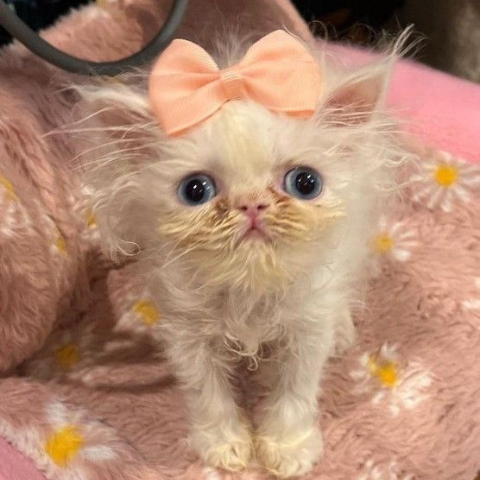
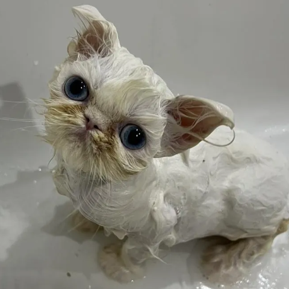

What's happening
The 3.5-month-old Persian kitten from Tampa Bay has taken over the internet with her scroungy fur, clumsy gait and sassy, soprano mews. Link out here >

The intrigue
Maybe it's Amerosa's hilarious video directing, taking viewers through Wisp's bath time or stitching together clips of her more talkative moments. Link out here >